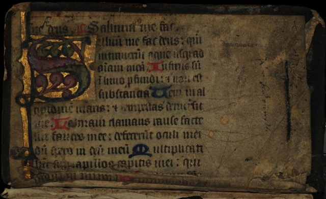

Will of John Archer, Labourer of North Muskham, Nottinghamshire
Written Sep 11, 1712, Proved Dec 8, 1712 [?]
Jim Cullen
Though not a Cullen, John Archer was father to Susanna Archer who married William Cullen on Jun 9, 1697 in Upton. See the Cullen Families of Nottinghamshire: Part II for more details. One mystery is the grandson, Joseph Cullen, who was previously unknown in the family. There is a complication to this story. John Archer, husbandman of N. Muskham, also appears on an Admonistration Bond for a Susanna Culling filed February 2, 1706/7. The reference number is PR.SW 112/5. John Archer was administrator and he was bound along with Richard Cullen, husbandman of Norwell, to fulfill the administration of Susanna's estate. A third name also bound was Thomas Moore, also a husbandman. Susanna Culling was described as "late of Holm, widow". So, Susanna was a widow when she passed and we have another associated Cullen name - Richard Cullen - who was evidently over 21.
Will Transcription
The Will of John Archer, Labourer of Upton, Nottinghamshire
Written Sep 11, 1712 & Proved Dec 8, 1712 [?]
In the name of God Amen I John Archer of North-Muskham in the county of Nottingham labourer being sick in body and of good & pfect mind & memory thanks be to Almighty God for the same But considering the uncertainty of my life do make & ordain this my last Will & Testamt in maner & form following (That is to say) Imprs I give & bequeath my soul into the hands of Almighty God my Maker & Redeemer hoping to be saved through Christs merits & Gods mercies and my body to be buried in the Churchyard of North-Muskham at the discrecon of my Executor herein after named Itm I give unto my son John Archer Five pounds & my sheep shears & one swine trough in full for his part & porcon Itm I give unto Thomas Willey my son in Law six pounds & one Trundle bedstead in full satisfaccon for his wives part & porcon Itm I give unto John Parlby my son in Law one shilling in full satisfaccon for his wives part & porcon Itm I also give unto John Archer junr my Grand child my Bible for his part & porcon Itm I also give unto Sarah Parlby my Grand child one Ewe & one Lamb to be worth seven shillings when she comes to age in full satisfaccon for her part & porcon Itm I give unto John Archer my son more in consideracon that he shall take care & keep Susannah Cullen & Joseph Cullen my Grand children untill they come to age to take care for themselves vizt in consideracon of Susannah Cullen six pounds and in consideracon of Joseph Cullen the use of Forty pounds wch I had of theirs and the Rent of the said Joseph Cullens house at Upton All the rest of my goods & chattels unbequeathed I do give & bequeath (after my Debts & Funeral charges are paid & discharged) unto Henry Archer my son whom I make & ordain my full & sole Executor of this my last Will & Testamt In witness whereof I have hereunto set my hand & seal this eleventh day of September in the eleventh year of Queen Anne over great Brittain &c Annoq Dmi 1712 John Archer his mark Signed sealed declared & published by the said Testator in the psence of us who also subscribed or names as Witnesses in the psence of the said Testator James Archer his mark (jur) Richard Cullen Mary Steevenson her mark 8ber 1712 probat cora Mro Moore.
Source: DGS#: 008088276, Image#: 293/437
Original record digitized by Family Search, a non-profit organization sponsored by The Church of Jesus Christ of Latter-day Saints
As we get more information, it will be posted here.

Photo by Boudewijn Huysmans on Unsplash [4]